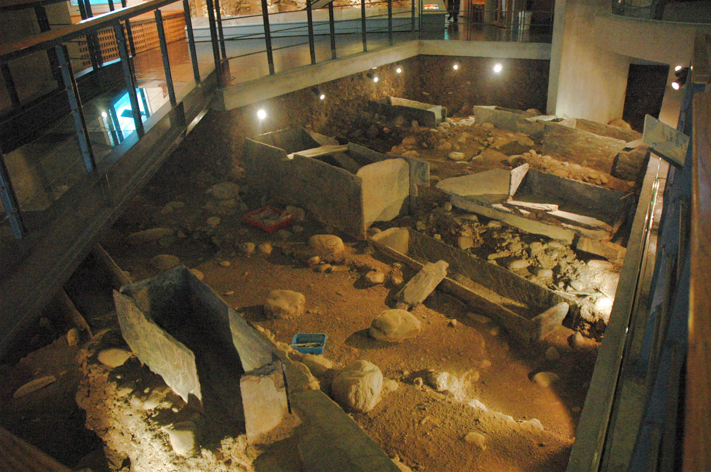

卑南遺址
第五組
李富源、李嘉、陳佳瑩、邱筠茜、朱苓語、沈韋廷
位置
臺東市南王里，東南距臺東市中心約5、6公里
歷史
- 距今約五千三百年前
- 已有新石器時代的人類在此生活
- 3500至2300 年前，出現繁盛的卑南文化人活動，發展出穩定的農漁獵聚落
- 卑南文化人開採附近的板岩、西瓜石、玉石等礦材，作為建築、製造裝飾品的原料
- 陶器技術發達，器型優美，變化豐富
- 因資源用罄、部落戰爭、天災或流行疾病，約二千年前，經風化成為廢墟，久而長埋地底，只遺留豎立地面的石柱群
發現
- 卑南遺址最早的考古紀錄是由日治初期的日本籍人類學者 鳥居龍藏所開始，他曾為卑南遺址的石柱拍攝兩幀照片，其拍攝時間可能約在1896年。
- 在 鹿野忠雄1930年發表的文章中曾敘述在卑南遺址所在處有數不清的板岩石柱豎立於地表上。
- 1945年時， 金關丈夫和 國分直一首次對最大立石的周圍開始進行試掘，並發現埋藏於遺跡地底的陶器以及住屋遺跡。
- 1980年，南迴鐵路卑南車站（即今臺東車站）開工，將地下沉睡數千年的遺構、遺物大量揭露，並造成嚴重破壞。
發現
- 發掘面積、出土石棺及遺物數量皆是台灣考古史的空前紀錄，大量精美玉器重現於世。建築物成排分布，已經是頗具組織的社會結構。
- 家屋主體以板岩石板、大漂石為牆基，木材為柱，屋牆、屋頂葺以竹架、茅草。屋前以石板舖成方形前庭，屋後有橢圓形砌石圈，用來儲存食物及大陶罐。聚落中有零星分布的高架榖倉，支柱上配有防鼠板。
發現
- 數以千計的石板棺埋在卑南遺址的建築物底部，成帶狀分布，而且與地上建築物的座向相同，顯然意義非比尋常。
- 卑南遺址也發現了被獵頭的無頭遺骸，很可能是因為族群擴張領域、爭奪自然資源，開始出現部落間的爭戰。
石板棺
- 多而密集，建築物、墓群的分布沿著北北東—南南西方向，墓葬的位置在建築物的正下方，可能有室內葬的風俗
玉器
- 具有特殊的材質、形狀，從選取之材到雕琢成形，且造型變化豐富，表現出卑南文化人高超的藝術水準及工藝技術

陶器
- 大多沒有紋飾，在陶紡輪、陶環及陶蓋上偶爾有紋飾出現。，品質普通，數量很多，種類多樣。陶器主要有罐、缽、瓶、盆、勺、杯，其他還有陶紡輪、陶蓋、陶環、陶槌、陶偶等。
陪葬陶罐
- 放於棺內死者臉側，也有在棺外頭部兩側或頭頂的。陪葬陶罐主要有兩種：「雙豎把圈足罐」，數量較多；「單豎把帶流無足罐」，數量較少。陪葬陶罐和日常使用的陶罐外表有很大的區別，表示日常與儀式用陶器的差異。
報告結束
謝謝大家
資料來源：維基百科、Google